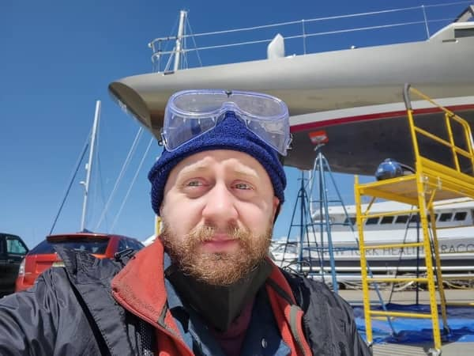

Milo Wissig is a painter living in Brooklyn, NY. He has exhibited his work in New York, Miami, Cleveland and Philadelphia. Milo recieved a BFA from Pratt Institute in 2013, after his graduating class's studios and work were destroyed in a fire on the Pratt campus.
He co-founded arts advocacy organization BuskNY, which spread awareness of the legality of public performance, in 2013, and curated events and created promotional materials for the organization for several years.
His work centers his relationship (as a queer trans man) with the queer and trans communities places he has lived; Brooklyn and Orlando, FL. It also struggles to challenge tropes used in the depiction of transgender people in art presented for a presumed cisgender and heterosexual audience; the cis gaze. These paintings focus on the reality of daily life in queer and trans-centered community: communal housing, public space, intimacy, poverty, and sexuality.
He works from his apartment, where he also gardens and bakes and brews mead. He has been making web sites since he was 12 and completed a course in full-stack web development in 2018.
